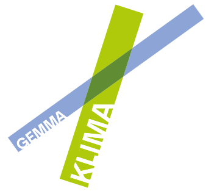

Für eine gute Lebensqualität in Städten braucht es Menschen, die sich dafür engagieren. Und Angebote, die sie dabei unterstützen. Hier setzt das steirische Forschungsprojekt GEMMA KLIMA an.
Das interdisziplinäre Team von GEMMA KLIMA unterstützt Gruppen, die in ihrer Stadt aktiv werden möchten. Wertvolle Infos und Veranstaltungen und individuelles Coaching erwarten alle, die sich der gemeinsamen Herausforderung stellen und klimaschonende Verhaltensweisen ausprobieren wollen.

Introvideo - Was will GEMMA KLIMA
Was will GEMMA KLIMA?
GEMMA KLIMA will das Tun erleichtern, damit klimafreundliches Handeln in den Bereichen Mobilität, Energie, Konsum oder Ernährung zur neuen Normalität wird. Die zentrale Botschaft: Wenn man den Klimaschutz gemeinsam angeht, kommt man besser und sicherer zum Ziel. Und trägt ganz konkret zu einem guten Leben für alle in der eigenen Stadt oder Gemeinde bei.
Wir erreichen Menschen aus verschiedenen gesellschaftlichen Gruppen, die sich zusammentun und gemeinsam klimaschonende Verhaltensweisen ausprobieren und leben. Wir etablieren die Idee in den drei Klimapionierstädten Graz, Judenburg und Weiz und setzen auf den Schneeballeffekt, um noch mehr Menschen in anderen Städten und Gemeinden für Klimaschutz zu begeistern.
Wie engagiere ich mich bei GEMMA KLIMA?
Ob Kulturverein, Sportclub, Freiwillige Feuerwehr, Arbeitsumfeld, Nachbarschaft oder Senior:innenrunde: Alle Gruppen, die gemeinsam aktiv werden möchten, können mitmachen. GEMMA KLIMA unterstützt sie dabei – mit wertvollem Wissen und praktischen Tipps. Und holt gute Beispiele und interessante Initiativen regelmäßig vor den Vorhang.
Auf den Webseiten von Graz, Judenburg und Weiz finden Sie weiterführende Informationen zum Projekt. Falls Sie ebenfalls aktiv werden wollen – auch in einer anderen Stadt oder Gemeinde –, schicken Sie uns bitte ein E-Mail an:
Die nächsten GEMMA-KLIMA-Treffs in Graz
Wer steht hinter GEMMA KLIMA?
Die Initiative GEMMA KLIMA beruht auf dem Förderprojekt „GEMMA K!“, das von den Klimapionierstädten Graz, Judenburg und Weiz, vom Land Steiermark, der Energie Agentur Steiermark, von StadtLABOR, Universität Graz und FH JOANNEUM getragen wird. Die Projektkoordination liegt bei der Stadt Graz
Partner
Fördergeber
Die Ausschreibung „Technologien und Innovationen für die klimaneutrale Stadt“ ist Teil des FTI-Schwerpunkts „Klimaneutrale Stadt“ des Bundesministeriums für Innovation, Mobilität und Infrastruktur (BMIMI) und des Klima- und Energiefonds (KLIEN). Die Abwicklung erfolgt im Auftrag des BMIMI und KLIEN durch die Österreichische Forschungsförderungsgesellschaft (FFG) gemeinsam mit der Austria Wirtschaftsservice Gesellschaft mbH (AWS).
Weitere Informationen zum Schwerpunkt „Klimaneutrale Stadt“.